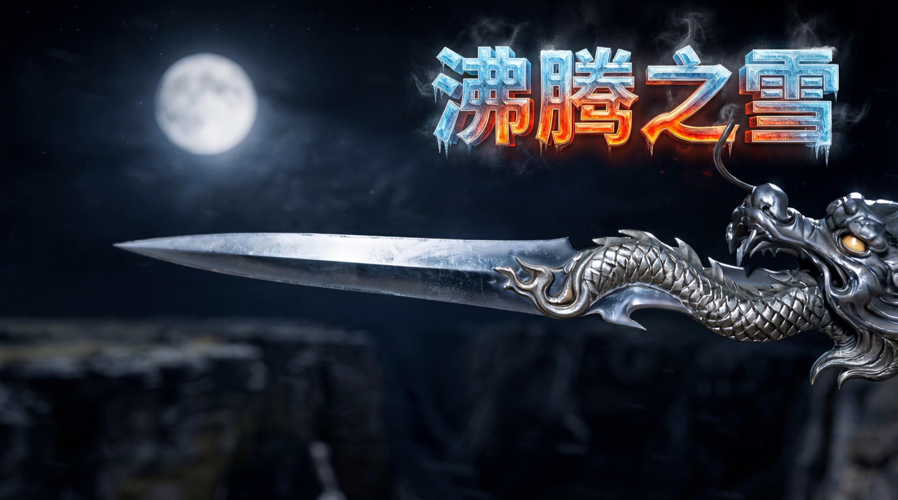
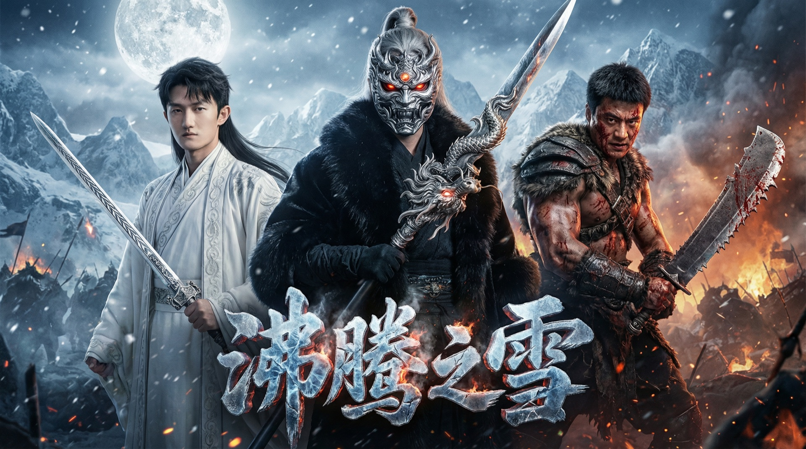
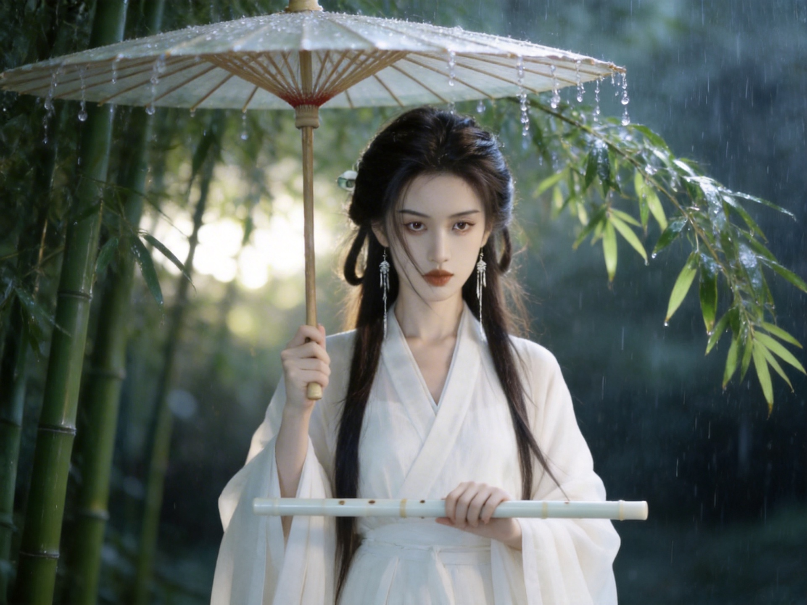

很多人问我，为什么叫「沸腾之雪」。
雪，是凉的。
沸腾，是热的。
但你见过那种人吗——
明明已经遍体鳞伤，还是眼神发光地站在那里。
那种状态，就叫沸腾之雪。
冰凉的外壳，滚烫的内核。
这是我对武侠最真实的理解。
❧ ❧ ❧
我爱上武侠，不是因为打打杀杀。
是因为一个人，叫黄药师。
东邪。桃花岛主。
他弹琴，他吹箫，他是五绝里最特立独行的那一个。
十几年前，读金庸，读到他，我就觉得：
如果有一天我也能玩乐器，我要学他的那一类。
后来我真的学了笛，学了箫。
再后来，我写小说。翻开我任何一篇作品，你都能在某个角落，找到一支笛，或者一管箫。
那是那颗种子发的芽。十几年前种下的，一直没死。
❧ ❧ ❧
《沸腾之雪》这部电影：
🎵 90% 的音乐 是我原创——配乐、主题曲、入场BGM全部自己写
✍️ 100% 的剧情 是原创——人物、武器、招式、名字，从零长出来的江湖

这里的角色，有一部分来自我的朋友。他们知道自己在里面，有时候会来问我「我打赢了没有」。
我每次都笑，然后说：你自己去看。
我们都是素人，不具备什么逆天颜值。
但我们凭武力上榜。
这才是真正的江湖——不靠脸，靠本事。
❧ ❧ ❧
我不是导演，不是专业编剧。
我只是一个从小读武侠、长大写武侠、现在用 AI 做武侠的人。
用 AI 做这件事，不是因为省事。是因为——
我脑子里的那个江湖，终于可以被看见了。
以前只能在文字里想象慕北歌出剑是什么样。现在可以生成出来，真的让他站在那里。那种感觉，像是一个十几年前的愿望，被悄悄兑现了。

这是「沸腾之雪」的起点。不是技术的炫耀，是一个写武侠的人，用时代给的工具，把心里的江湖搬出来。
欢迎你来看看。
— 后 记 —
谢谢金庸，谢谢古龙。
谢谢你们给了我这个江湖。
一支箫，种下了这一切。